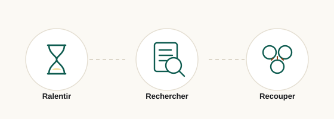

Guide pratique
La méthode en trois gestes
Ralentir, rechercher, recouper. Trois gestes qui prennent deux minutes et qui écartent la grande majorité des accroches creuses, sans compétence technique particulière.
Sur cette page
Pourquoi trois gestes suffisent
Une accroche sensationnaliste tient sur un équilibre fragile : elle a besoin d'être lue vite, seule, et sans être comparée à autre chose. Chacun des trois gestes attaque une de ces trois conditions. Le premier casse la vitesse, le deuxième casse l'isolement, le troisième casse l'absence de comparaison.
Il n'est pas nécessaire de les appliquer à toute l'information que vous croisez. Une seule situation le justifie : quand vous ressentez l'envie de partager immédiatement. C'est le signal que la formulation a fonctionné, et donc le moment exact où la vérification a le plus de valeur.

Geste 1 — Ralentir
Fixez-vous un délai court et non négociable : dix minutes sans repartager, sans commenter, sans réagir. Ce délai n'a rien de moral, il est purement pratique. Il vous fait sortir de la fenêtre où circulent les versions les plus déformées d'un même propos.
Ce qui se passe pendant ces dix minutes
- Les premières corrections apparaissent, souvent dans les réponses aux publications initiales.
- La formulation d'origine réapparaît, généralement bien plus sobre que sa reprise.
- Votre propre réaction perd en intensité, ce qui rend la lecture du texte plus facile.
Le repère utile
Demandez-vous ce que vous perdez concrètement à lire la même information dans deux heures. Dans l'immense majorité des cas, la réponse est : rien. Une information qui perd toute valeur si elle est lue deux heures plus tard n'est presque jamais une information ; c'est une actualité de flux.
Geste 2 — Rechercher la source d'origine
L'objectif n'est pas de trouver « un article qui en parle », mais de retrouver le propos lui-même : l'enregistrement, la transcription complète, le communiqué, le document. Tant que vous n'avez vu que des commentaires, vous n'avez rien vérifié.
| Cela compte comme source | Cela ne compte pas |
|---|---|
| L'enregistrement ou la vidéo intégrale de la séquence | Un extrait de quelques secondes sans début ni fin |
| La transcription complète du passage | Une citation partielle entre guillemets, sans lien |
| Le communiqué ou le document officiel publié | Une capture d'écran d'un autre message |
| Le compte rendu d'une institution identifiable | Un autre titre reprenant la même formule |
Trois questions pour guider la recherche
- Qui a prononcé la phrase ? Un nom, une fonction.
- Où et quand exactement ? Une émission, une date, un horaire.
- Que dit la phrase complète, avec les deux phrases qui l'entourent ? Le contexte immédiat suffit souvent à tout changer.
Geste 3 — Recouper avec un acteur indépendant
Recouper ne signifie pas « voir la même information plusieurs fois ». Vingt reprises du même texte ne valent qu'une seule source. Ce qui compte, c'est qu'un acteur ait constaté le fait de son côté, avec ses propres moyens.
Comment reconnaître une vraie indépendance
- Le second acteur cite des éléments que le premier n'avait pas : un horaire, un extrait plus long, une réaction obtenue directement.
- Il formule les faits avec ses propres mots, pas avec la phrase déjà lue ailleurs.
- Il indique lui-même sa source, et cette source n'est pas la première publication.
Les fausses indépendances les plus courantes
- Plusieurs sites appartenant au même groupe et publiant le même texte.
- Une reprise qui cite « selon plusieurs médias » sans en nommer un seul.
- Une traduction d'un article étranger présentée comme une confirmation.
- Un grand nombre de comptes personnels recopiant la même phrase à l'identique.
La liste de contrôle
Sept questions, dans l'ordre. Si vous restez bloqué sur l'une d'entre elles, la vérification s'arrête là : il n'y a rien à partager.
- Quel fait précis est affirmé, en une phrase et sans adjectif ?
- Qui l'affirme, nommément ?
- Où puis-je lire ou écouter le propos d'origine ?
- Quelle est la date exacte — pas « hier », la date ?
- Quel élément chiffré ou quel document permettrait de trancher ?
- Un acteur indépendant rapporte-t-il le même fait avec ses propres éléments ?
- Que reste-t-il de la phrase si je retire les mots chargés d'émotion ?
Quatre erreurs fréquentes
1. Confondre popularité et fiabilité
Le nombre de partages mesure l'intérêt suscité, jamais l'exactitude. Une formulation efficace circule d'autant plus vite qu'elle est simple, et une information exacte est rarement simple.
2. Chercher à confirmer plutôt qu'à vérifier
Taper la formule du titre dans un moteur de recherche renvoie les pages qui utilisent la même formule. Cherchez plutôt le nom de la personne, la date et le lieu : vous tomberez sur des sources, pas sur des échos.
3. Traiter le démenti comme une preuve du contraire
Un démenti est une déclaration de plus, pas une vérification. Il s'évalue exactement comme l'affirmation initiale : qui parle, avec quels éléments ?
4. Croire qu'une accroche outrancière prouve un mensonge
C'est l'erreur symétrique, et elle est aussi coûteuse. Beaucoup d'informations exactes sont mal titrées, parce que le titre et le contenu ne sont pas toujours écrits par la même personne, ni dans le même but.
Ce que cette méthode ne fait pas
Elle ne dit pas ce qu'il faut penser d'un sujet, ne classe aucun média, ne remplace pas le travail d'une rédaction professionnelle et ne permet pas de trancher un débat d'opinion. Elle sert à une seule chose : distinguer ce qui est établi de ce qui est simplement affirmé, avant de relayer.
Contenu pédagogique. Ce guide est proposé à titre informatif par une entreprise qui n'est pas un média. Il ne constitue ni une formation certifiante, ni un conseil professionnel, et n'engage aucune responsabilité quant aux conclusions que vous en tirez.